Manual Transaxle Unit: Disassembly
- REMOVE MANUAL TRANSMISSION FILLER PLUG
- Remove the transmission filler plug and gasket from the transmission case.
- REMOVE DRAIN PLUG SUB-ASSEMBLY
- Remove the drain plug and gasket from the transmission case.
- REMOVE CLUTCH RELEASE CYLINDER ASSEMBLY
- Remove the 2 bolts and clutch release cylinder.
- REMOVE SPEEDOMETER DRIVEN HOLE COVER SUB-ASSEMBLY
- Remove the bolt and driven hole cover from the transaxle case.
- Remove the O-ring from the driven hole cover.
- REMOVE CLUTCH RELEASE FORK SUB-ASSEMBLY
- Remove the clutch release fork with clutch release bearing from the front transaxle case.
- REMOVE CLUTCH RELEASE BEARING ASSEMBLY
- Remove the clutch release fork bearing hub clip and clutch release bearing from the clutch release fork.
- REMOVE RELEASE FORK SUPPORT
- Remove the clutch release fork support from the front transaxle case.
- REMOVE CLUTCH RELEASE FORK BOOT
- Remove the clutch release fork boot from the front transaxle case.
- REMOVE BACK-UP LIGHT SWITCH ASSEMBLY
- Using SST, remove the back-up light switch and gasket from the transmission case.
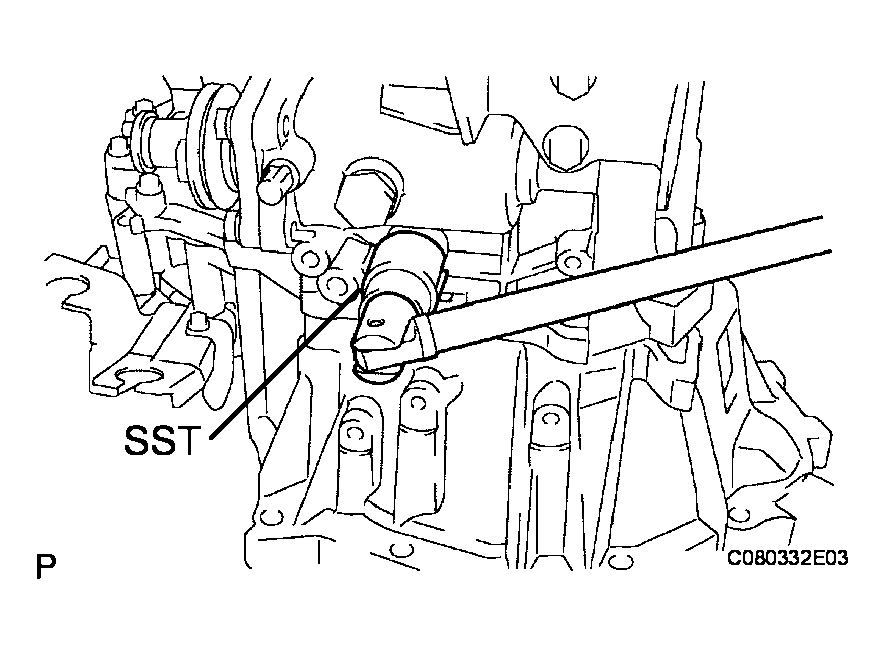
Courtesy of © TOYOTA, LICENSE AGREEMENT TMS1002SST 09817-16011
- Using SST, remove the back-up light switch and gasket from the transmission case.
- REMOVE FLOOR SHIFT CONTROL LEVER HOUSING SUPPORT BRACKET
- Remove the 3 bolts and floor shift control lever housing support bracket from the front transaxle case.
- REMOVE SELECTING BELLCRANK ASSEMBLY
- Remove the 2 bolts and selecting bellcrank from the transmission case.
- Remove the control shift lever bush.
- FIX MANUAL TRANSAXLE ASSEMBLY
- Place the transaxle on wooden blocks.
- REMOVE NO. 1 LOCK BALL ASSEMBLY
- Remove the lock ball from the transmission case.
- REMOVE SHIFT AND SELECT LEVER SHAFT ASSEMBLY
- Remove the 4 bolts, lever shaft and gasket from the transmission case.
- REMOVE MANUAL TRANSMISSION CASE COVER SUB-ASSEMBLY
- Remove the 9 bolts.
- Using a plastic-faced hammer, carefully tap the projection of the manual transmission case cover to remove it from the transmission case.
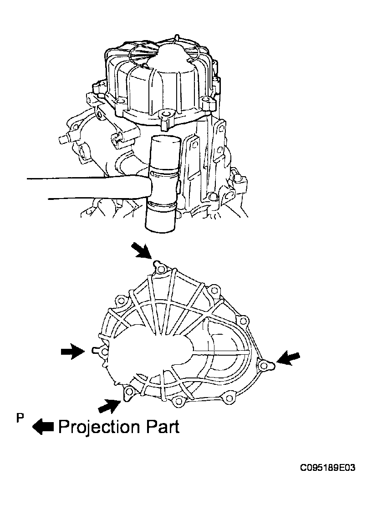
Courtesy of © TOYOTA, LICENSE AGREEMENT TMS1002NOTE: Do not damage the transmission case.
- REMOVE MANUAL TRANSMISSION REAR OUTPUT SHAFT SET NUT
- Using a chisel and hammer, loosen the staked part of the set nut.
- Engage the 2 gears simultaneously to lock the transmission.
- Remove the transmission output shaft rear set nut.
- Disengage the 2 gears.
- REMOVE NO. 3 GEAR SHIFT FORK
- Remove the gear shift fork lock bolt from the No. 3 gear shift fork.
- Remove the No. 3 transmission hub sleeve with No. 3 gear shift fork from the No. 3 transmission clutch hub.
- INSPECT 5TH GEAR THRUST CLEARANCE
- Using a dial indicator, measure the thrust clearance.
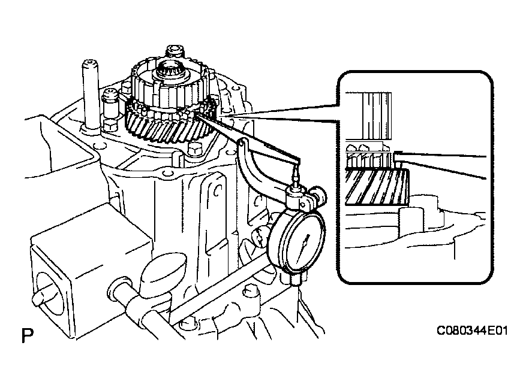
Courtesy of © TOYOTA, LICENSE AGREEMENT TMS1002Standard clearance: 0.10 to 0.57 mm (0.0039 to 0.0224 in.)
Maximum clearance: 0.57 mm (0.0224 in.)
If the clearance is greater than the maximum, replace the 5th gear needle roller bearing or input shaft.
- Using a dial indicator, measure the thrust clearance.
- INSPECT 5TH GEAR RADIAL CLEARANCE
- Using a dial indicator, measure the 5th gear radial clearance.
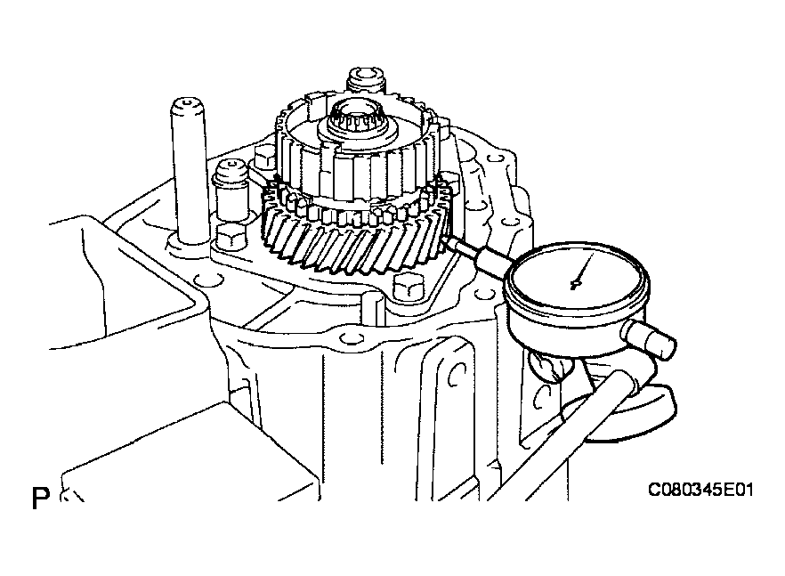
Courtesy of © TOYOTA, LICENSE AGREEMENT TMS1002Standard clearance
GEAR RADIAL CLEARANCE REFERENCEItem Specified Condition KOYO made 0.015 to 0.058 mm (0.0006 to 0.0023 in.) NSK made 0.015 to 0.056 mm (0.0006 to 0.0022 in.) Maximum clearance
CLEARANCE REFERENCEItem Specified Condition KOYO made 0.058 mm (0.0023 in.) NSK made 0.056 mm (0.0022 in.) If the clearance is greater than the maximum, replace the gear, needle roller bearing or shaft.
- Using a dial indicator, measure the 5th gear radial clearance.
- REMOVE NO. 3 TRANSMISSION CLUTCH HUB
- Using 2 screwdrivers and a hammer, tap out the snap ring.
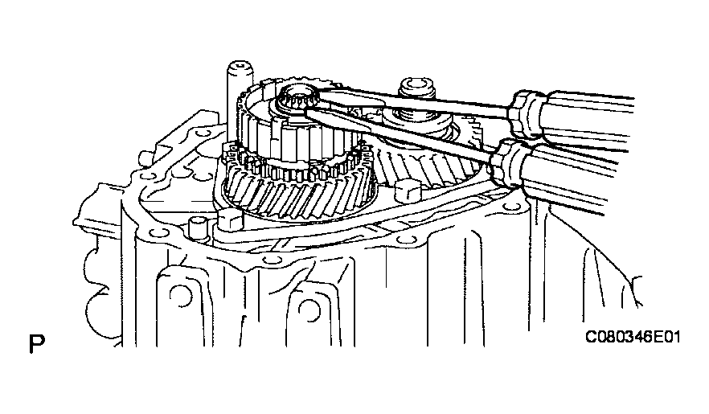
Courtesy of © TOYOTA, LICENSE AGREEMENT TMS1002NOTE: Use a cloth to keep the snap ring from springing away. - Using SST, remove the No. 3 transmission clutch hub, 5th gear and No. 3 synchronizer ring from the input shaft.
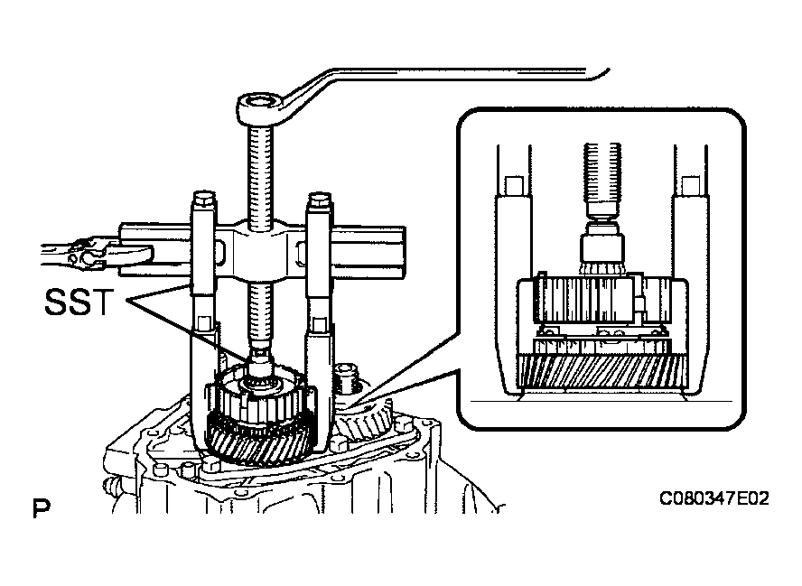
Courtesy of © TOYOTA, LICENSE AGREEMENT TMS1002SST 09950-40011 (09951-04020, 09952-04010,
09953-04030, 09954-04010, 09955-04071,
09957-04010), 09950-60010 (09951-00200)
- Remove the 3 synchromesh shifting keys and 2 synchromesh shifting key springs from the No. 3 transmission clutch hub.
- Using 2 screwdrivers and a hammer, tap out the snap ring.
- REMOVE 5TH GEAR NEEDLE ROLLER BEARING
- Remove the 5th gear needle roller bearing and 5th gear bearing spacer from the input shaft.
- REMOVE 5TH DRIVEN GEAR
- Using SST, remove the 5th driven gear from the output shaft.
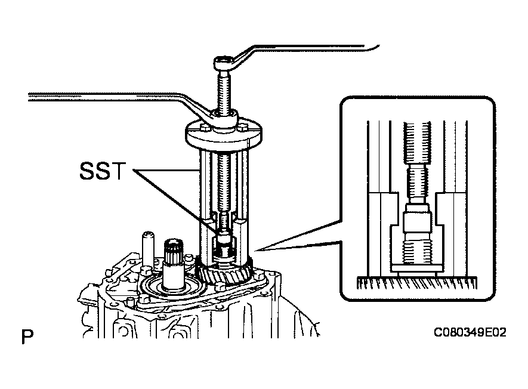
Courtesy of © TOYOTA, LICENSE AGREEMENT TMS1002SST 09950-30012 (09951-03010, 09953-03010,
09954-03010, 09955-03011, 09957-04010),
09950-60010 (09951-00190)
- Using SST, remove the 5th driven gear from the output shaft.
- REMOVE REAR BEARING RETAINER
- Remove the 5 bolts and bearing retainer from the manual transmission case.
- REMOVE OUTPUT SHAFT REAR BEARING HOLE SNAP RING
- Using a snap ring expander, remove the hole snap ring from the output shaft.
- REMOVE INPUT SHAFT REAR BEARING HOLE SNAP RING
- Using a snap ring expander, remove the hole snap ring from the input shaft.
- REMOVE REVERSE IDLER GEAR SHAFT BOLT
- Remove the shaft bolt and gasket from the transmission case.
- REMOVE SHIFT FORK SHAFT SNAP RING
- Using 2 screwdrivers and a hammer, tap out the snap ring from the No. 2 gear shift fork shaft.
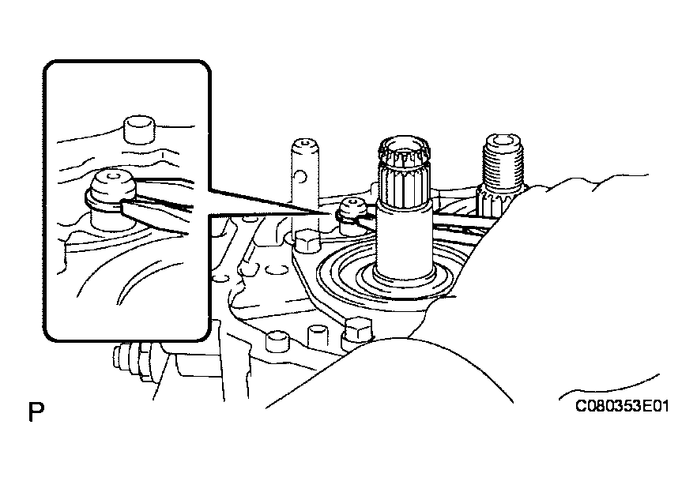
Courtesy of © TOYOTA, LICENSE AGREEMENT TMS1002NOTE: Use a cloth to keep the snap ring from springing away.
- Using 2 screwdrivers and a hammer, tap out the snap ring from the No. 2 gear shift fork shaft.
- REMOVE SHIFT DETENT BALL
- Using a hexagon wrench, remove the 2 shift detent ball plugs from the transmission case.
- Using a magnetic finger, remove the 2 No. 1 shift detent ball spring seats, 2 shift detent ball springs and 2 shift detent balls from the transmission case.
- Using a hexagon wrench, remove the shift detent ball plug from the front transaxle case.
- Using a magnetic finger, remove the seat, spring and ball from the front transaxle case.
- REMOVE NO. 2 LOCK BALL ASSEMBLY
- Using a hexagon wrench, remove the No. 2 lock ball from the transmission case.
- REMOVE MANUAL TRANSMISSION CASE
- Remove the 3 bolts from the front transaxle case.
- Remove the 13 bolts from the transmission case.
- Using a brass bar and hammer, carefully tap the projection of the transmission case to remove it from the transaxle case.
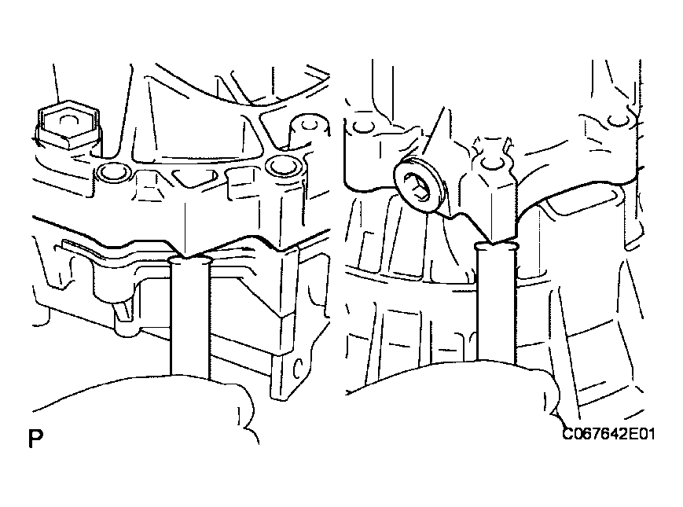
Courtesy of © TOYOTA, LICENSE AGREEMENT TMS1002NOTE: Do not damage the transmission case and transaxle case.
- REMOVE REVERSE IDLER GEAR SUB-ASSEMBLY
- Remove the reverse idler gear, thrust washer and reverse idler gear shaft from the front transaxle case.
- REMOVE REVERSE SHIFT ARM BRACKET ASSEMBLY
- Remove the 2 bolts and reverse shift arm bracket from the front transaxle case.
- REMOVE NO. 2 GEAR SHIFT FORK SHAFT
- Remove the 2 bolts from the No. 2 gear shift fork and No. 1 gear shift head.
- Remove the No. 2 gear shift fork shaft and No. 1 gear shift head from the front transaxle case.
- REMOVE NO. 1 GEAR SHIFT FORK SHAFT
- Using 2 screwdrivers and a hammer, tap out the snap ring.
NOTE: Use a cloth to keep the snap ring from springing away.
- Remove the shift fork set bolt and No. 1 gear shift fork shaft from the No. 1 gear shift fork.
- Remove the No. 1 gear shift fork.
- Using 2 screwdrivers and a hammer, tap out the snap ring.
- REMOVE NO. 3 GEAR SHIFT FORK SHAFT
- Using 2 screwdrivers and a hammer, tap out the snap ring from the No. 3 gear shift fork shaft.
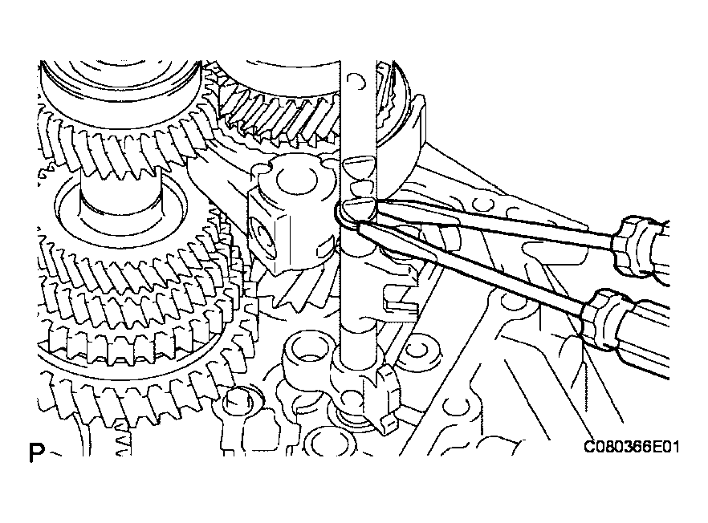
Courtesy of © TOYOTA, LICENSE AGREEMENT TMS1002NOTE: Use a cloth to keep the snap ring from springing away. - Remove the No. 3 gear shift fork shaft with reverse shift fork and No. 2 gear shift fork from the transaxle case.
- Using a magnetic finger, remove the 2 reverse shift fork balls from the reverse shift fork.
- Using 2 screwdrivers and a hammer, tap out the snap ring from the No. 3 shift fork shaft.
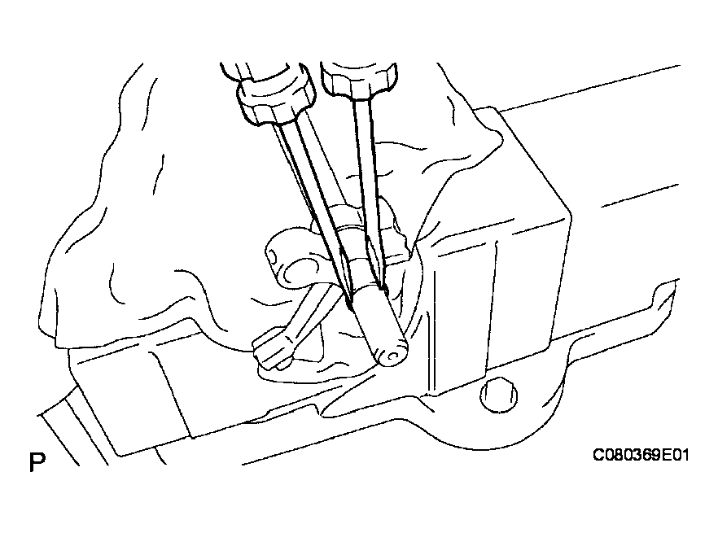
Courtesy of © TOYOTA, LICENSE AGREEMENT TMS1002NOTE: Use a cloth to keep the snap ring from springing away. - Remove the reverse shift fork from the No. 3 gear shift fork shaft.
- Using 2 screwdrivers and a hammer, tap out the snap ring from the No. 3 gear shift fork shaft.
- REMOVE INPUT SHAFT ASSEMBLY
- Remove the input shaft and output shaft from the front transaxle case.
- REMOVE DIFFERENTIAL CASE ASSEMBLY
- Remove the differential case from the front transaxle case.
- REMOVE MANUAL TRANSAXLE CASE RECEIVER
- Remove the bolt and transaxle case receiver from the front transaxle case.
- REMOVE REVERSE RESTRICT PIN ASSEMBLY
- Using a hexagon wrench, remove the reverse restrict pin plug from the transmission case.
- Using a 5 mm pin punch and hammer, tap out the slotted spring pin and remove the reverse restrict pin from the transmission case.
- REMOVE NO. 1 OIL RECEIVER PIPE
- Remove the bolt and No. 1 oil receiver pipe from the transmission case.Courtesy of © TOYOTA, LICENSE AGREEMENT TMS1002NOTE: Be careful not to damage the No. 1 oil receiver pipe.
- Remove the bolt and No. 1 oil receiver pipe from the transmission case.
- REMOVE NO. 2 OIL RECEIVER PIPE
- Remove the bolt and No. 2 oil receiver pipe from the transmission case.Courtesy of © TOYOTA, LICENSE AGREEMENT TMS1002NOTE: Be careful not to damage the No. 2 oil receiver pipe.
- Remove the bolt and No. 2 oil receiver pipe from the transmission case.
- REMOVE BEARING LOCK PLATE
- Remove the bolt and bearing lock plate from the front transaxle case.
- REMOVE TRANSMISSION MAGNET
- Remove the transmission magnet from the front transaxle case.
- REMOVE INPUT SHAFT FRONT BEARING
- Using SST, remove the front bearing from the front transaxle case.Courtesy of © TOYOTA, LICENSE AGREEMENT TMS1002
SST 09612-65014 (09612-01050, 09612-01060)
- Using SST, remove the front bearing from the front transaxle case.
- REMOVE FRONT TRANSAXLE CASE OIL SEAL
- Using a screwdriver, pry out the front transaxle case oil seal from the transaxle case.
- REMOVE OUTPUT SHAFT FRONT BEARING
- Using SST, remove the front bearing from the front transaxle case.Courtesy of © TOYOTA, LICENSE AGREEMENT TMS1002
SST 09308-00010
NOTE: Do not apply excessive force to the front transaxle case when installing SST.
- Using SST, remove the front bearing from the front transaxle case.
- REMOVE OUTPUT SHAFT COVER
- Remove the output shaft cover from the front transaxle case.
- REMOVE FRONT DIFFERENTIAL CASE FRONT TAPERED ROLLER BEARING
- Using SST, remove the front differential case front tapered roller bearing (outer race) and plate washer from the front transaxle case.Courtesy of © TOYOTA, LICENSE AGREEMENT TMS1002
SST 09612-65014 (09612-01040, 09612-01050)
- Using SST, remove the front differential case front tapered roller bearing (inner race) from the differential case assembly.Fig 65: Removing Front Differential Case Front Tapered Roller Bearing From Differential Case AssemblyCourtesy of © TOYOTA, LICENSE AGREEMENT TMS1002
SST 09950-00020, 09950-00030, 09950-40011
(09957-04010), 09950-60010 (09951-00360)
NOTE: Be careful not to damage the bearing.
- Using SST, remove the front differential case front tapered roller bearing (outer race) and plate washer from the front transaxle case.
- REMOVE TRANSAXLE CASE OIL SEAL
- Using SST and a hammer, tap out the transaxle case oil seal from the front transaxle case.Courtesy of © TOYOTA, LICENSE AGREEMENT TMS1002
SST 09950-60010 (09951-00530), 09950-70010 (09951-07150)
- Using SST and a hammer, tap out the transaxle case oil seal from the front transaxle case.
- REMOVE FRONT DIFFERENTIAL CASE REAR TAPERED ROLLER BEARING
- Using SST, remove the rear tapered roller bearing (outer race) and plate washer from the transmission case.Courtesy of © TOYOTA, LICENSE AGREEMENT TMS1002
SST 09612-65014 (09612-01040, 09612-01050)
- Using SST, remove the rear tapered roller bearing (inner race) from the front differential case.Courtesy of © TOYOTA, LICENSE AGREEMENT TMS1002
SST 09950-40011 (09951-04010, 09952-04010,
09953-04020, 09954-04010, 09955-04061,
09957-04010, 09958-04011), 09950-60010 (09951-00360)
NOTE: Be careful not to damage the bearing.
- Using SST, remove the rear tapered roller bearing (outer race) and plate washer from the transmission case.
- REMOVE TRANSMISSION CASE OIL SEAL
- Using SST and a hammer, tap out the transmission case oil seal from the transmission case.Courtesy of © TOYOTA, LICENSE AGREEMENT TMS1002
SST 09950-60010 (09951-00530), 09950-70010 (09951-07150)
- Using SST and a hammer, tap out the transmission case oil seal from the transmission case.
- REMOVE SHIFT AND SELECT LEVER SHAFT BIMETAL FORMED BUSH
- Using SST, remove the bush.
SST 09319-60020
- Using SST, remove the bush.